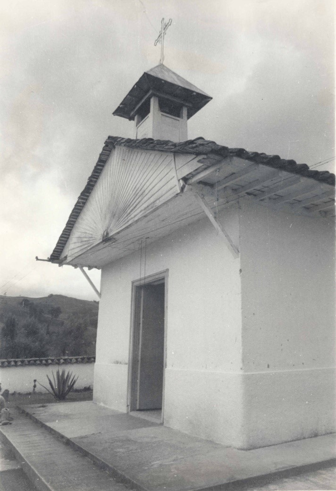
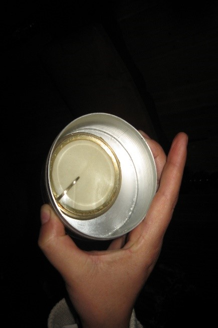

Registro Fotográfico

"Detalle fachada principal, fronton y campanario"
 "Detalle externo fachada principal, bardal y accesos"
"Detalle externo fachada principal, bardal y accesos"
 "Fachada principal con las puestas originales sin vanos y la figura radicada del
fronton"
"Fachada principal con las puestas originales sin vanos y la figura radicada del
fronton"
 "aspecto original de la capilla"
"aspecto original de la capilla"
 "Dibujo de la capilla Original"
"Dibujo de la capilla Original"
 Fotografia de el padre nazario
Fotografia de el padre nazario
 Pablo Jaramillo Fundador de Enea y donador de la parroquia
Pablo Jaramillo Fundador de Enea y donador de la parroquia
"Detalle interior de la capilla y el altar"
"Aspecto general del altar en los 90's"
 "Aspecto de la capilla del baptisterio con retablos de devoción popular y la pila
bautismal "
"Aspecto de la capilla del baptisterio con retablos de devoción popular y la pila
bautismal "
 "Incendio isto desde la fachada principal"
"Incendio isto desde la fachada principal"
 "Incendio visto desde un lado de la capilla"
"Incendio visto desde un lado de la capilla"
"Copon Recuperado del incendio con las Hostias intactas"

"Pixide Recuperado del incendio"
 "Sagrario recuperado del incendio"
"Sagrario recuperado del incendio"
 "cristo recuperado del incendio"
"cristo recuperado del incendio"
 "Detalle externo de La fachada Restaurado"
"Detalle externo de La fachada Restaurado"
 "Fachada restaurada de la capilla"
"Fachada restaurada de la capilla"
"Interior restaurado de la capilla"
 "vista desde el aire de la capilla restaurada"
"vista desde el aire de la capilla restaurada"
 "vista desde el aire de la capilla restaurada"
"vista desde el aire de la capilla restaurada"